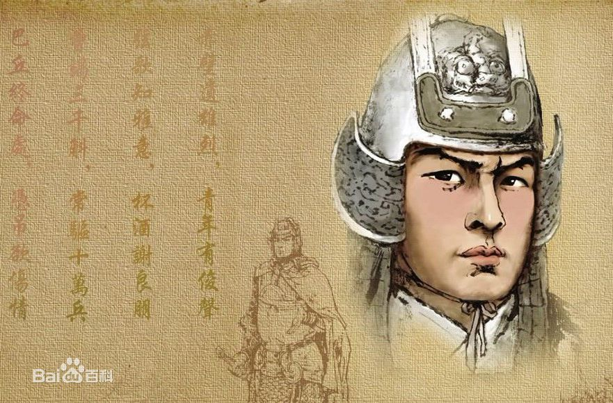

周瑜 （东汉末年名将）
周瑜（175年-210年），字公瑾，庐江舒县（今安徽省合肥市舒县）人[1] 。东汉末年名将，洛阳令周异之子，堂祖父周景、堂叔周忠，都官至太尉。
身体长壮有姿貌、精音律，江东有“曲有误，周郎顾”之语。周瑜少与孙策交好，21岁追随孙策奔赴战场平定江东。孙策遇刺身亡，孙权继任，周瑜将兵赴丧，以中护军与长史张昭共掌众事。建安十三年 （208年），周瑜率军与刘备联合，于赤壁之战中大败曹军，由此奠定了“三分天下”的基础。建安十四年（209年），拜偏将军，领南郡太守。建安十五年（210年）病逝于巴丘，年仅36岁。
正史上周瑜“性度恢廓”“实奇才也”，孙权称赞周瑜有“王佐之资"，范成大誉之为“世间豪杰英雄士，江左风流美丈夫”。宋徽宗时，追尊其为平虏伯，位列唐武庙六十四将、宋武庙七十二将之一。
刘秉璋

刘秉璋(1826～1905)，晚清重臣，淮军名将。字仲良，安徽庐江人。胸怀大志，青年中举成名，由于国家动乱，由翰林院编修而入军幕，投笔从戎，平吴剿捻后逐步成长为一名封建官吏。中法战争期间，力抗外侮，指挥了著名的“镇海之役”，维护了国家尊严。督蜀十年，勤政廉洁，用竹笼古法维修都江堰水利工程，造福百姓。在“成都教案”中维护民族利益，清廷罢其职。一生谈泊名利，却十分重视教育，为家乡捐建了三乐堂书院、南京庐江试馆，培养了一大批有用之材。
孙立人 （中华民国将领、抗战名将）
孙立人，字抚民，号仲能，汉族，安徽省舒城县三河（今属安徽合肥肥西县）人，生于安徽省庐江县金牛镇。先后毕业于清华大学、美国弗吉尼亚军事学院。中华民国陆军二级上将军衔，第一次缅战时任38师师长，在孟关杰布山隘间战役毙敌2000余[1] ，孟拱河谷战役击毙日军12000余[2] ，第二次入缅作战时任新一军军长，攻克八莫、南坎、老龙山、南巴卡、新维、腊戍、乔美等地，共击毙日军3万3千余[3] ，是抗战中军级单位将领中歼灭日军最多的将领，有“丛林之狐”、“东方隆美尔”的美称。内战时曾于四平、 公主岭、德惠等地击败林彪。